Início 2026-10-17T18:55:52.577Z · fim 2026-10-17T18:58:28.504Z · exploração somente leitura
8telas (+ 3 subestados)
38achados
6críticos ou altos
1ações bloqueadas
Fluxos-objetivo
Ver os detalhes da equipe
Aprovado
Objetivo: Abrir a tela de equipe e ver os detalhes do plano contratado.
Critério de sucesso: o texto com o plano e a quantidade de assentos aparece na tela.
Todos os passos e verificações satisfeitos. Passo 3 aprovado pelo Judge: Depois de clicar em "Ver detalhes", abriu-se um painel com o texto "Plano Business, 10 assentos." e um botão "Fechar". O mesmo texto aparece na captura de tela e no texto observado, então o plano e a quantidade de assentos estão visíveis.
1. Abrir a tela de equipe pelo menu principal (pass)
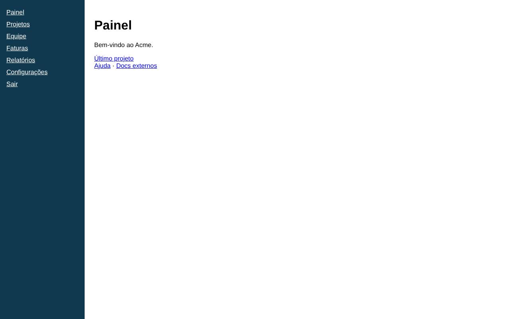
AntesDepois
2. Clicar em 'Ver detalhes' para exibir os detalhes do plano contratado (pass)
Antes
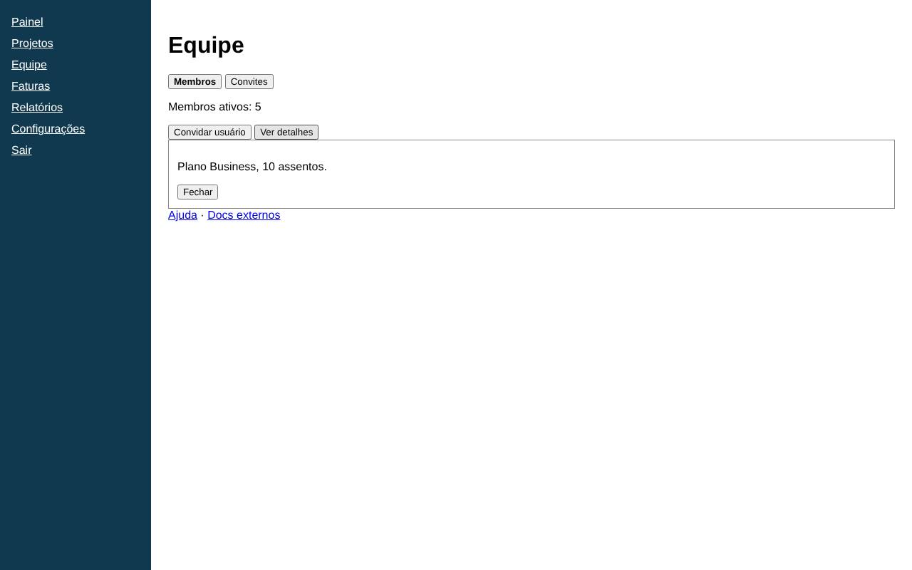
Depois
3. Critério de sucesso: o texto com o plano e a quantidade de assentos aparece na tela. (pass)
Depois
Achados
Crítica (2)
CríticaAcessibilidade184f66be55
Acessibilidade: Form elements must have labels
Ensure every form element has a label. Regra axe `label`. https://dequeuniversity.com/rules/axe/4.14/label?application=playwright
Evidências
/settings: input
Como reproduzir
Início
Configurações
Sugestão: Element does not have an implicit (wrapped) <label> Element does not have an explicit <label>
Telas: Configurações
CríticaAcessibilidade8a50490b34
Acessibilidade: Images must have alternative text
Ensure <img> elements have alternative text or a role of none or presentation. Regra axe `image-alt`. https://dequeuniversity.com/rules/axe/4.14/image-alt?application=playwright
Evidências
/settings: img
Como reproduzir
Início
Configurações
Sugestão: Element does not have an alt attribute aria-label attribute does not exist or is empty
Telas: Configurações
Alta (4)
AltaAcessibilidade98cabb27ac
Acessibilidade: <html> element must have a lang attribute
Ensure every HTML document has a lang attribute. Regra axe `html-has-lang`. https://dequeuniversity.com/rules/axe/4.14/html-has-lang?application=playwright
Evidências
/help: html
Como reproduzir
Início
Ajuda
Sugestão: The <html> element does not have a lang attribute
Telas: Página não encontrada
AltaAcessibilidade17ad4e8bdd
Acessibilidade: Documents must have <title> element to aid in navigation
Ensure each HTML document contains a non-empty <title> element. Regra axe `document-title`. https://dequeuniversity.com/rules/axe/4.14/document-title?application=playwright
Evidências
/help: html
Como reproduzir
Início
Ajuda
Sugestão: Document does not have a non-empty <title> element
Telas: Página não encontrada
AltaTécnicofc58b53f3e
Exceção JavaScript não tratada: undefinedHelper is not defined
A página lançou uma exceção que não foi capturada: undefinedHelper is not defined
Evidências
Exceção: undefinedHelper is not defined
Como reproduzir
Início
Sugestão: Tratar o erro ou corrigir a referência indefinida; erros não tratados costumam quebrar a interface.
Telas: Painel, Projetos
AltaTécnico323f2d8dee
HTTP 500 em GET /api/invoices
A requisição GET /api/invoices respondeu com status 500.
Evidências
GET http://127.0.0.1:4020/api/invoices → 500
Como reproduzir
Início
Faturas
Sugestão: Investigar o erro no servidor (logs da API).
Telas: Faturas
Média (27)
MédiaAcessibilidadea70e66eee2
Acessibilidade: All page content should be contained by landmarks
Ensure all page content is contained by landmarks. Regra axe `region`. https://dequeuniversity.com/rules/axe/4.14/region?application=playwright
Evidências
/help: h1
Como reproduzir
Início
Ajuda
Sugestão: Some page content is not contained by landmarks
Telas: Página não encontrada
MédiaAcessibilidade1364f07991
Acessibilidade: Document should have one main landmark
Ensure the document has a main landmark. Regra axe `landmark-one-main`. https://dequeuniversity.com/rules/axe/4.14/landmark-one-main?application=playwright
Evidências
/help: html
Como reproduzir
Início
Ajuda
Sugestão: Document does not have a main landmark
Telas: Página não encontrada
MédiaAcessibilidadeeebea8e37f
Acessibilidade: Page should contain a level-one heading
Ensure that the page, or at least one of its frames contains a level-one heading. Regra axe `page-has-heading-one`. https://dequeuniversity.com/rules/axe/4.14/page-has-heading-one?application=playwright
Evidências
/reports: html
Como reproduzir
Início
Relatórios
Sugestão: Page must have a level-one heading
Telas: Relatórios · Acme SaaS
MédiaTécnico2d4e419975
Erro no console: Falha ao carregar faturas: 500
A página registrou um erro no console: Falha ao carregar faturas: 500
Evidências
console.error: Falha ao carregar faturas: 500
Como reproduzir
Início
Faturas
Telas: Faturas
MédiaTécnicod1401154cc
HTTP 404 ao abrir a tela
A própria página respondeu com status 404.
Evidências
GET http://127.0.0.1:4020/help → 404
Como reproduzir
Início
Ajuda
Telas: Página não encontrada
MédiaUXopinião do agente · 80%2514cf6d60
"Excluir conta" sem destaque de perigo e colado às ações comuns
Uma ação destrutiva e irreversível aparece como link azul comum, com o mesmo peso de "Ajuda", logo abaixo de "Salvar". Isso aumenta o risco de clique por engano e não indica a gravidade da ação.
Evidências
Link "Excluir conta" no mesmo estilo de "Ajuda" e "Docs externos", imediatamente abaixo do botão "Salvar"
Como reproduzir
Início
Configurações
Sugestão: Mover para uma seção "Zona de perigo" separada, com estilo de alerta (vermelho) e uma etapa de confirmação.
Telas: Configurações
MédiaUXopinião do agente · 65%35bc08d437
"Sair" aparece junto com os itens de navegação
"Sair" é uma ação destrutiva (encerra a sessão), mas aparece logo abaixo de "Configurações", com o mesmo estilo dos links de navegação. Isso aumenta o risco de clique sem querer.
Evidências
Lista lateral: "Configurações" seguido de "Sair", sem separador e com o mesmo estilo.
Como reproduzir
Início
Sugestão: Separar "Sair" visualmente, por exemplo no rodapé do menu ou no menu do usuário, com um divisor.
Telas: Painel
MédiaUXopinião do agente · 75%92174c5c77
Aba ativa pouco diferenciada
As abas "Membros" e "Convites" parecem botões comuns. A aba selecionada só aparece em negrito, sem outro indicador claro de estado, o que dificulta saber qual visão está aberta.
Evidências
Botões "Membros" (em negrito) e "Convites" com o mesmo estilo de botão padrão
Como reproduzir
Início
Equipe
Sugestão: Usar um componente de abas com indicador visual forte (sublinhado ou cor de fundo) e aria-selected.
Telas: Equipe
MédiaUXopinião do agente · 70%73c57d8dd4
Ação principal sem destaque
"Convidar usuário" deveria ser a ação principal, mas tem o mesmo peso visual de "Ver detalhes" e aparece colado a ele.
Evidências
Botões "Convidar usuário" e "Ver detalhes" lado a lado com estilo idêntico
Como reproduzir
Início
Equipe
Sugestão: Estilizar "Convidar usuário" como botão primário e separá-lo das ações secundárias.
Telas: Equipe
MédiaUXopinião do agente · 85%1c0211b12c
Campo de texto sem rótulo
O único campo da página não tem rótulo nem placeholder, então o usuário não sabe o que preencher nem o que o botão "Salvar" vai alterar.
Evidências
Campo de texto vazio, sem rótulo visível, logo abaixo do quadrado azul e ao lado do botão "Salvar"
Como reproduzir
Início
Configurações
Sugestão: Colocar um rótulo visível que descreva o dado (ex.: "Nome de exibição") e um texto de ajuda, se necessário.
Telas: Configurações
MédiaUXopinião do agente · 65%f318d7f100
Configurações sem seções nem agrupamento
Os elementos estão empilhados sem espaçamento, títulos de seção ou agrupamento. O campo e o botão ficam colados e não fica claro a qual parte das configurações cada controle pertence.
Evidências
Quadrado azul, campo + "Salvar", "Excluir conta" e "Ajuda · Docs externos" empilhados sem espaço entre si e sem subtítulos
Como reproduzir
Início
Configurações
Sugestão: Dividir em seções com subtítulos (Perfil, Conta etc.) e aplicar espaçamento consistente entre os grupos.
Telas: Configurações
MédiaUXopinião do agente · 75%1cb3073145
Erro sem destaque visual
A mensagem de erro usa o mesmo estilo do texto comum: preto, sem ícone, sem cor de alerta e sem contêiner. Ela não se destaca como um estado de erro.
Evidências
"Erro ao carregar" aparece em texto simples, com o mesmo peso dos demais textos da página
Como reproduzir
Início
Faturas
Sugestão: Mostrar o erro em um bloco de alerta, com ícone e cor de erro, e respeitando o contraste exigido para acessibilidade.
Telas: Faturas
MédiaUXopinião do agente · 60%ee17fae8b4
Hierarquia visual fraca e espaço vazio
O conteúdo fica concentrado no canto superior esquerdo, em texto pequeno de link padrão, e a maior parte da área principal fica em branco. Os itens da lista estão muito juntos, o que deixa as áreas de clique pequenas.
Evidências
Lista com marcadores "Projeto 1/2/3" em espaçamento simples e o restante da área à direita e abaixo totalmente vazio
Como reproduzir
Início
Projetos
Sugestão: Aumentar o espaçamento e o tamanho das áreas clicáveis e usar um layout em tabela ou grade que ocupe a largura disponível.
Telas: Projetos
MédiaUXopinião do agente · 70%c8ec7b259f
Lista de membros ausente na aba Membros
A aba Membros mostra só uma contagem e não lista os membros. O usuário não consegue ver quem faz parte da equipe nem gerenciar ninguém diretamente.
Evidências
Único conteúdo da aba: "Membros ativos: 5"
Como reproduzir
Início
Equipe
Sugestão: Exibir uma tabela de membros com nome, e-mail, papel e ações por linha.
Telas: Equipe
MédiaUXopinião do agente · 90%ef98c004fb
Mensagem de erro genérica e sem explicação
A tela mostra só "Erro ao carregar". Não diz o que falhou (lista de faturas?), por que falhou nem se o problema é temporário. O usuário fica sem saber o estado das próprias faturas.
Evidências
Texto "Erro ao carregar" logo abaixo do título "Faturas"
Como reproduzir
Início
Faturas
Sugestão: Trocar por uma mensagem específica, como "Não foi possível carregar suas faturas. Verifique sua conexão e tente novamente", com a causa quando ela for conhecida.
Telas: Faturas
MédiaUXopinião do agente · 80%98a0d3cd7b
Menu lateral não indica a página atual
Na navegação lateral, "Painel" tem o mesmo estilo dos outros itens, mesmo sendo a página aberta. Sem destaque, o usuário não percebe onde está.
Evidências
Menu lateral: "Painel", "Projetos", "Equipe"... aparecem todos sublinhados, com a mesma cor e o mesmo peso, sem destaque para "Painel".
Como reproduzir
Início
Sugestão: Destacar o item ativo com fundo, negrito ou um indicador lateral e usar aria-current="page".
Telas: Painel
MédiaUXopinião do agente · 80%3a29df5760
Métrica sem período nem contexto de comparação
"Receita do mês" não diz qual mês nem traz comparação com o período anterior ou com a meta. Assim, quem lê não sabe se o número é bom ou ruim.
Evidências
Texto "Receita do mês: R$ 120.000" sem mês/ano, sem data de atualização e sem variação.
Como reproduzir
Início
Relatórios
Sugestão: Mostrar o período (ex.: "Receita de março/2025"), a variação em relação ao mês anterior e a data da última atualização.
Telas: Relatórios · Acme SaaS
MédiaUXopinião do agente · 85%defa631eb1
Nenhuma ação de recuperação após o erro
Não há botão para tentar de novo nem caminho alternativo, como falar com o suporte. Para recuperar a tela, o usuário precisa recarregar a página por conta própria.
Evidências
Abaixo de "Erro ao carregar" só aparecem os links "Ajuda · Docs externos", sem botão "Tentar novamente"
Como reproduzir
Início
Faturas
Sugestão: Adicionar um botão principal "Tentar novamente" e, se possível, um link para o suporte de cobrança.
Telas: Faturas
MédiaUXopinião do agente · 75%d8b06f53f7
Nomes de projeto genéricos e sem informação extra
Os itens da lista têm só nomes numerados, sem status, data, responsável ou descrição. Assim o usuário não consegue distinguir os projetos nem escolher qual abrir sem clicar em cada um.
Evidências
Lista com "Projeto 1", "Projeto 2", "Projeto 3" como links simples, sem nenhum outro dado
Como reproduzir
Início
Projetos
Sugestão: Mostrar em cada item nome descritivo, status, última atualização e responsável, em formato de tabela ou cartões.
Telas: Projetos
MédiaUXopinião do agente · 75%45c5fc50c5
Página 404 sem o layout do app e sem nenhuma navegação
A página de erro não tem menu lateral, cabeçalho nem rodapé, ao contrário das outras telas do aplicativo. Sem nenhum elemento além do título, o usuário fica preso e precisa usar o botão Voltar do navegador ou digitar outra URL.
Evidências
A tela inteira é branca e o único elemento é o título "Página não encontrada", no canto superior esquerdo, sem estilo próprio.
Como reproduzir
Início
Ajuda
Sugestão: Mostrar a página 404 dentro do layout padrão do app e incluir links visíveis, como "Voltar ao painel" e "Ir para a Ajuda", além de uma busca.
Telas: Página não encontrada
MédiaUXopinião do agente · 60%c0e96facbc
Página de erro sem estilo visual e sem hierarquia
O título aparece com a fonte serifada padrão do navegador, encostado no canto da tela, e o resto da tela fica vazio. Isso não segue a identidade visual do app e não deixa claro se o problema é do usuário ou do sistema.
Evidências
O título "Página não encontrada" aparece em fonte serifada padrão do navegador, no canto superior esquerdo, e o resto da tela está em branco.
Como reproduzir
Início
Ajuda
Sugestão: Aplicar a tipografia e o espaçamento do design system, centralizar o conteúdo e acrescentar um texto curto explicando o que aconteceu.
Telas: Página não encontrada
MédiaUXopinião do agente · 75%2b55024e47
Página de Relatórios sem filtros, detalhamento ou exportação
A tela tem o título "Relatórios", mas mostra só um número solto. Não dá para mudar o período, ver a composição da receita nem exportar os dados, que é o que se espera de uma área de relatórios.
Evidências
Abaixo do título "Relatórios" só aparece a linha "Receita do mês: R$ 120.000"; não há filtros, gráficos, tabelas nem botões.
Como reproduzir
Início
Relatórios
Sugestão: Incluir um seletor de período, uma tabela ou gráfico com a receita detalhada (por projeto ou cliente) e uma ação para exportar (CSV/PDF).
Telas: Relatórios · Acme SaaS
MédiaUXopinião do agente · 60%c06b20d8b6
Painel sem conteúdo útil e com hierarquia fraca
A página principal mostra só uma saudação e três links soltos. Não há resumo, métricas nem ações principais, e quase toda a área fica vazia.
Evidências
Conteúdo: "Bem-vindo ao Acme." / "Último projeto" / "Ajuda · Docs externos" e o resto da tela em branco.
Como reproduzir
Início
Sugestão: Incluir cartões de resumo (projetos, faturas pendentes, atividade recente) e uma ação principal bem visível.
Telas: Painel
MédiaUXopinião do agente · 70%3dae65f7b1
Quadrado azul sem identificação
Há um bloco azul sólido sem texto ou legenda. Pode ser um avatar, uma cor de tema ou um logo, mas a tela não deixa claro o que ele é nem se dá para interagir com ele.
Evidências
Quadrado azul de ~40px abaixo do título "Configurações", sem texto associado
Como reproduzir
Início
Configurações
Sugestão: Incluir uma legenda (ex.: "Foto de perfil") e uma ação explícita ("Alterar"), ou remover o elemento se for só decorativo.
Telas: Configurações
MédiaUXopinião do agente · 80%b663d3f4f5
Rota de Ajuda (/help) leva a uma página 404
O usuário que procura ajuda cai numa página de erro. Isso quebra o fluxo de suporte justamente quando ele precisa de orientação, e passa a impressão de que o produto está quebrado.
Evidências
A tela da rota /help mostra apenas o título "Página não encontrada".
Como reproduzir
Início
Ajuda
Sugestão: Publicar a página de Ajuda nessa rota ou corrigir os links que apontam para /help, levando o usuário ao destino certo (central de ajuda ou documentação).
Telas: Página não encontrada
MédiaUXopinião do agente · 65%2c37f9533a
Rótulo "Ver detalhes" ambíguo
Não fica claro de que são os detalhes: da equipe, dos membros ou dos convites.
Evidências
Botão "Ver detalhes"
Como reproduzir
Início
Equipe
Sugestão: Usar um rótulo específico, como "Ver membros" ou "Detalhes da equipe".
Telas: Equipe
MédiaUXopinião do agente · 65%f9517dc66f
Sem ação principal para criar projeto
A tela de Projetos não tem botão nem link para criar um projeto novo, nem para buscar ou filtrar. Falta uma ação principal clara na página.
Evidências
Abaixo do título "Projetos" só aparecem a lista de três links e "Ajuda · Docs externos"; não há nenhum botão
Como reproduzir
Início
Projetos
Sugestão: Colocar um botão de destaque "Novo projeto" ao lado do título e, se a lista crescer, adicionar busca e filtros.
Telas: Projetos
Baixa (5)
BaixaUXopinião do agente · 55%fd262b1c27
Link externo sem indicação e misturado com links de ajuda
"Docs externos" leva para fora do app, mas tem o mesmo estilo de "Ajuda", sem ícone de link externo. Além disso, os links de suporte ficam colados em "Último projeto", sem separação entre tipos de conteúdo diferentes.
Evidências
"Ajuda · Docs externos" logo abaixo de "Último projeto", sem espaço nem ícone de link externo.
Como reproduzir
Início
Sugestão: Adicionar um ícone de link externo e agrupar os links de suporte em uma seção separada.
Telas: Painel
BaixaUXopinião do agente · 55%2cb6370026
Links de ajuda colados aos botões de ação
Os links "Ajuda · Docs externos" ficam logo abaixo dos botões, sem espaçamento, e parecem fazer parte do grupo de ações.
Evidências
"Ajuda · Docs externos" imediatamente abaixo de "Convidar usuário" e "Ver detalhes"
Como reproduzir
Início
Equipe
Sugestão: Separar os links de ajuda com espaçamento ou movê-los para uma área de suporte.
Telas: Equipe
BaixaUXopinião do agente · 50%e19dceb0c0
Links de ajuda com o mesmo peso dos itens da lista
"Ajuda" aparece logo abaixo da lista, sem separação nem destaque diferente. Ele se confunde com o conteúdo principal e parece fazer parte da lista de projetos.
Evidências
"Ajuda · Docs externos" logo abaixo de "Projeto 3", com o mesmo estilo de link azul sublinhado
Como reproduzir
Início
Projetos
Sugestão: Levar os links de ajuda para um rodapé ou ícone de ajuda e separá-los visualmente da lista.
Telas: Projetos
BaixaUXopinião do agente · 70%35fe6df495
Rótulo "Último projeto" é vago
O link não diz qual é o projeto nem quando foi acessado. O usuário só descobre o destino depois de clicar.
Evidências
Link "Último projeto" sem o nome do projeto.
Como reproduzir
Início
Sugestão: Mostrar o nome e a data, por exemplo: "Continuar: Projeto X (editado ontem)".
Telas: Painel
BaixaUXopinião do agente · 60%3ddc941437
Rótulo e valor da métrica com o mesmo estilo
O rótulo e o valor aparecem numa única linha, com a mesma fonte e o mesmo peso. Nada destaca o número, e a métrica fica maior que o próprio título da página, o que inverte a hierarquia.
Evidências
"Receita do mês: R$ 120.000" está em fonte maior que o título "Relatórios", e rótulo e valor têm o mesmo estilo.
Como reproduzir
Início
Relatórios
Sugestão: Usar um card de KPI: rótulo pequeno e discreto, valor em destaque e título da página como o elemento principal.
Telas: Relatórios · Acme SaaS
Telas
Painel
/dashboard6 achados
Caminho: Início
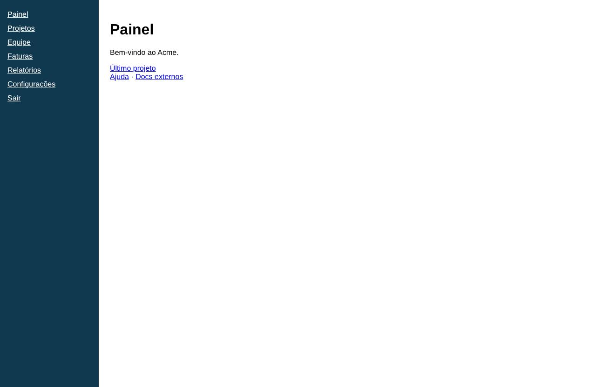
Projetos
/projects5 achados
Caminho: Início › Projetos
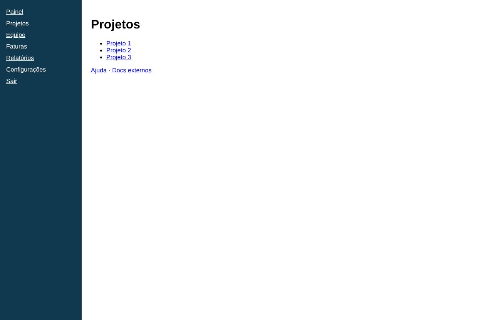
Equipe
/team5 achados
Caminho: Início › Equipe
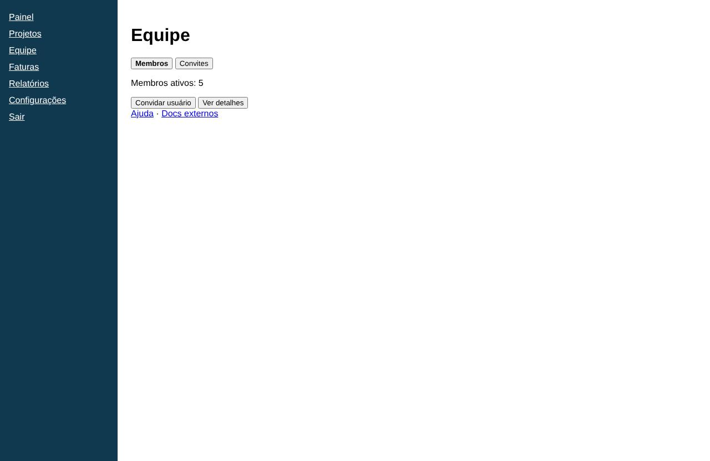
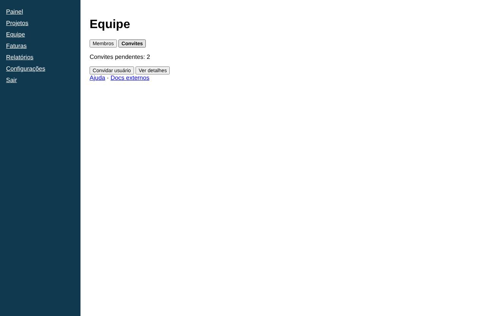
aba Convitesaba Membros
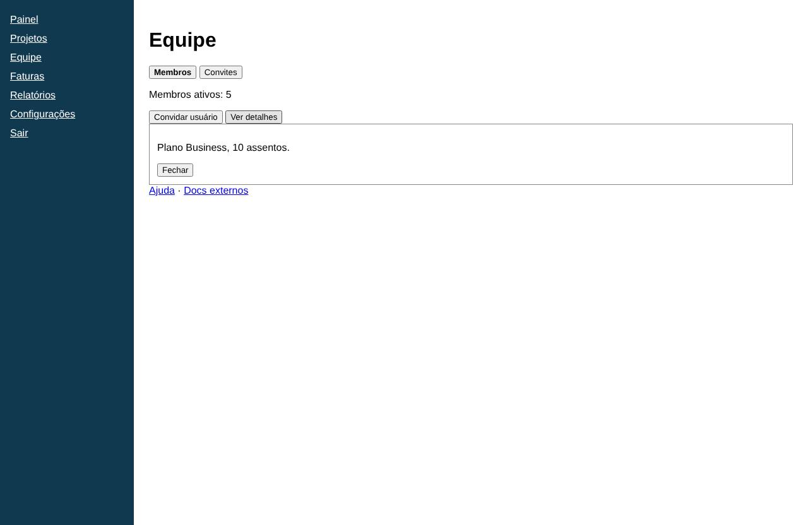
Ver detalhes
Faturas
/billing5 achados
Caminho: Início › Faturas
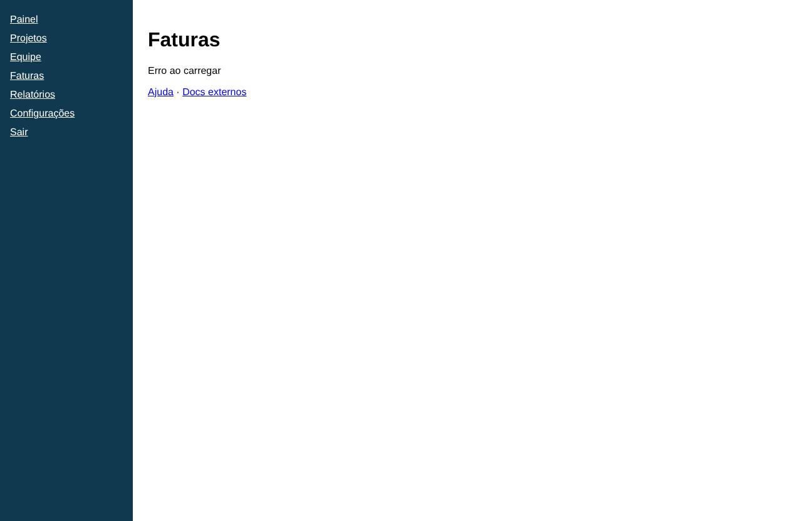
Relatórios · Acme SaaS
/reports4 achados
Caminho: Início › Relatórios
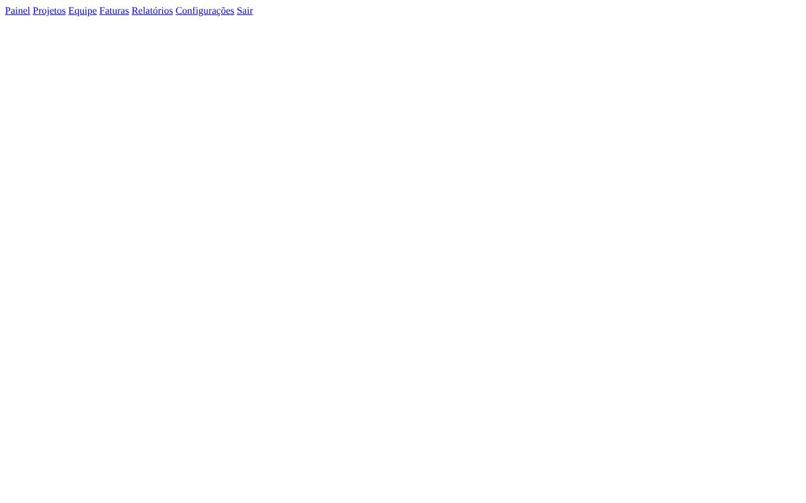
Configurações
/settings6 achados
Caminho: Início › Configurações
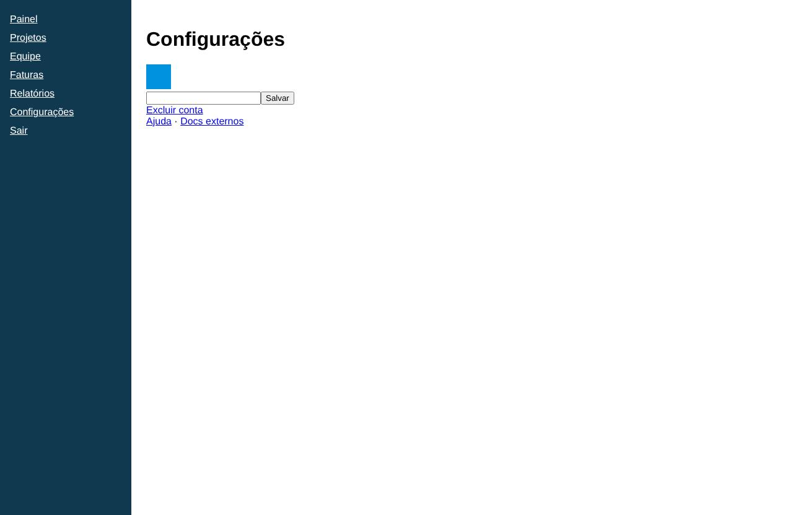
Projeto 1
/projects/:id0 achados
Caminho: Início › Último projeto
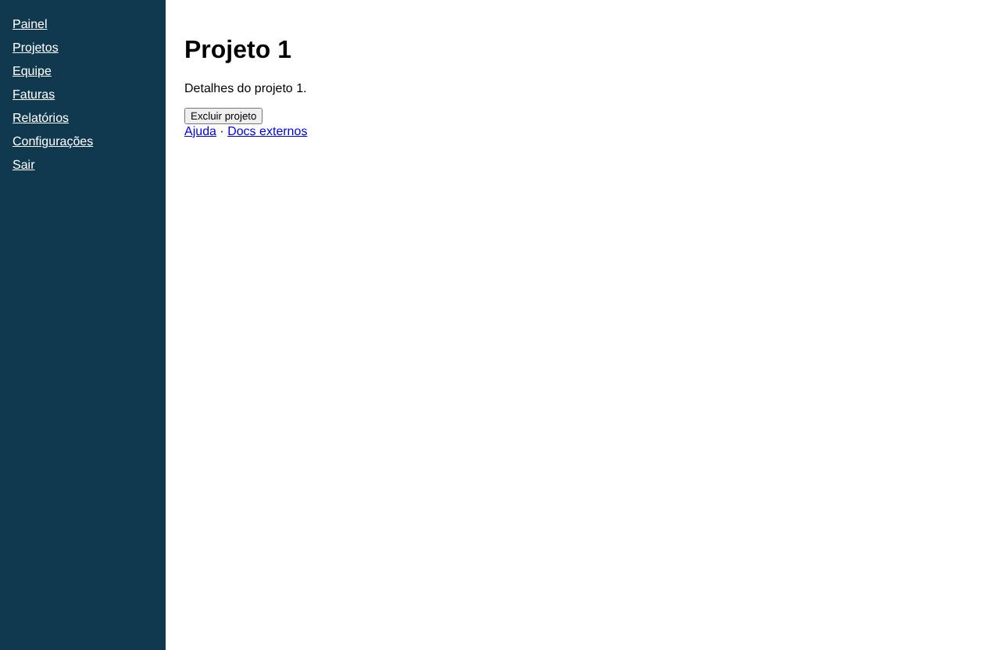
Página não encontrada
/help8 achados
Caminho: Início › Ajuda
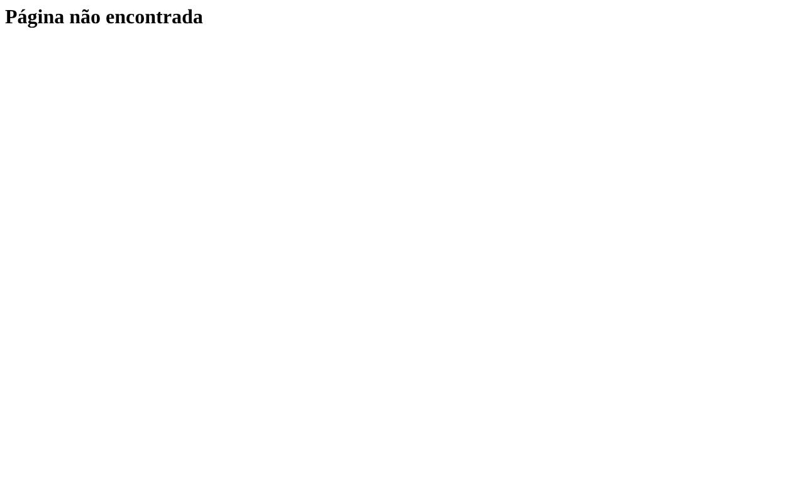
Cobertura
Limites atingidos: nenhum.
Camada
Tela
Alvo
Motivo
elemento
settings
link "Excluir conta"
rótulo de escrita: "Excluir conta"
Observações
LLM indisponível (UX): Resposta do LLM inválida após retentativa: [
LLM: 23 chamadas · 49316 tokens de entrada · 11646 de saída. Achados marcados como opinião do agente não são medições.